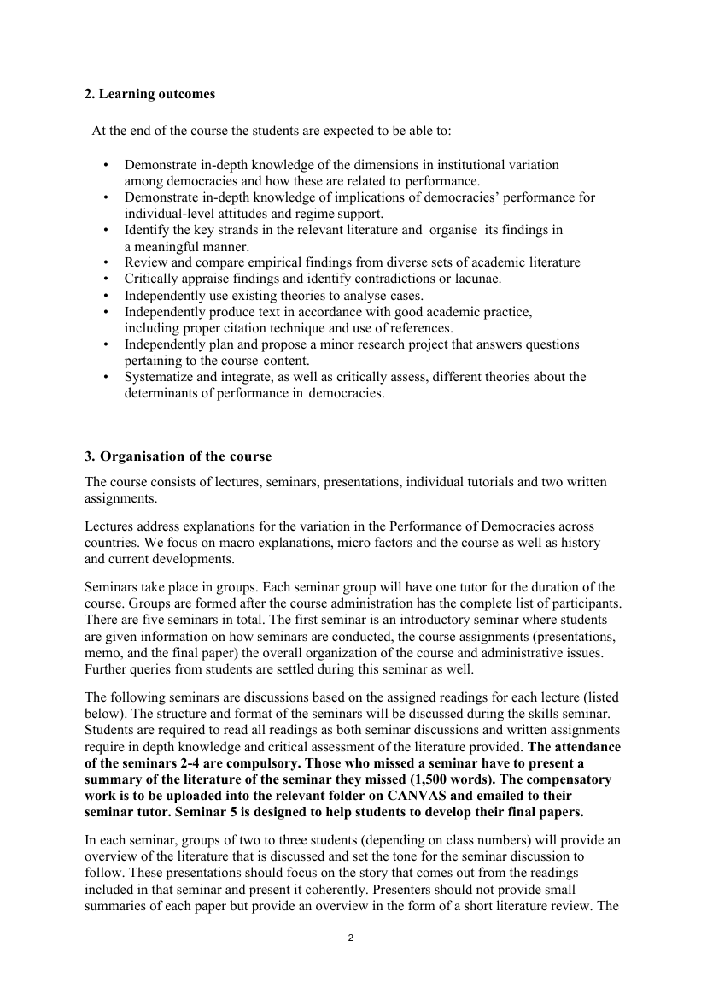
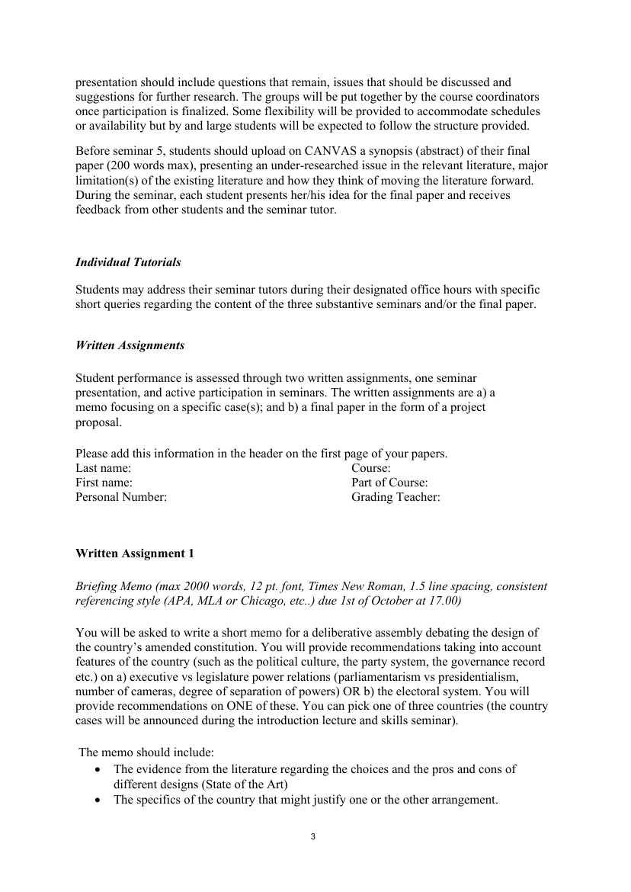
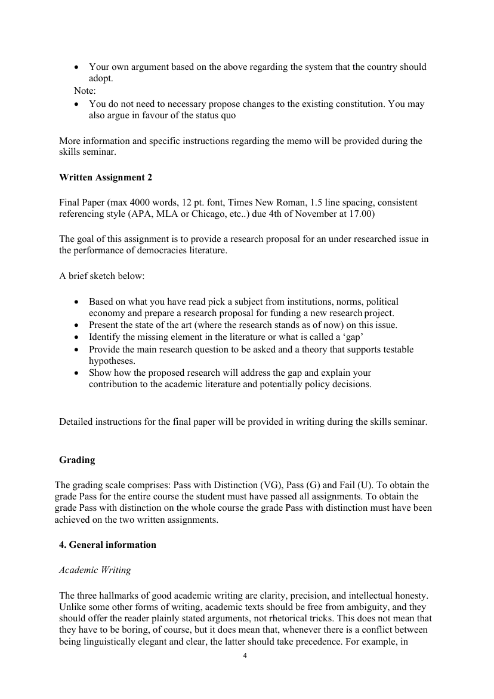

Belägg för examinationsmatrisens markeringar · Källa: kursguide H25
Tabellen nedan styrker examinationsmatrisens markeringar för SK2211 mot kursguide H25. Kursen examineras genom två skriftliga uppgifter (Briefing Memo + Final Paper i form av en project proposal), seminariepresentation, samt aktivt deltagande i seminarierna.
| Examinationsform (per matris) | Citat ur kursguide H25 | Källa |
|---|---|---|
| PM / forskningsplan | Final Paper (max 4000 words, 12 pt. font, Times New Roman, 1.5 line spacing …) The goal of this assignment is to provide a research proposal for an under researched issue in the performance of democracies literature. … prepare a research proposal for funding a new research project. … Provide the main research question to be asked and a theory that supports testable hypotheses. |
Sid 4 — Se sida → |
| Seminarieinlämning / memo | Briefing Memo (max 2000 words …) You will be asked to write a short memo for a deliberative assembly debating the design of the country's amended constitution. You will provide recommendations taking into account features of the country … on a) executive vs legislature power relations … OR b) the electoral system. Before seminar 5, students should upload on CANVAS a synopsis (abstract) of their final paper (200 words max), presenting an under-researched issue in the relevant literature … |
Sid 2–3 — Se sida → |
| Muntlig presentation | In each seminar, groups of two to three students (depending on class numbers) will provide an overview of the literature that is discussed and set the tone for the seminar discussion to follow. These presentations should focus on the story that comes out from the readings included in that seminar and present it coherently. … The presentation should include questions that remain, issues that should be discussed and suggestions for further research. |
Sid 2 — Se sida → |
| Seminariedeltagande | The attendance of the seminars 2-4 are compulsory. Those who missed a seminar have to present a summary of the literature of the seminar they missed (1,500 words). … Seminar 5 is designed to help students to develop their final papers. Student performance is assessed through two written assignments, one seminar presentation, and active participation in seminars. |
Sid 2–3 — Se sida → |

Sida 2 — Organisation: lectures, seminars, presentations
Sida 3 — Briefing Memo (Written Assignment 1)
Sida 4 — Final Paper (research proposal) + Grading